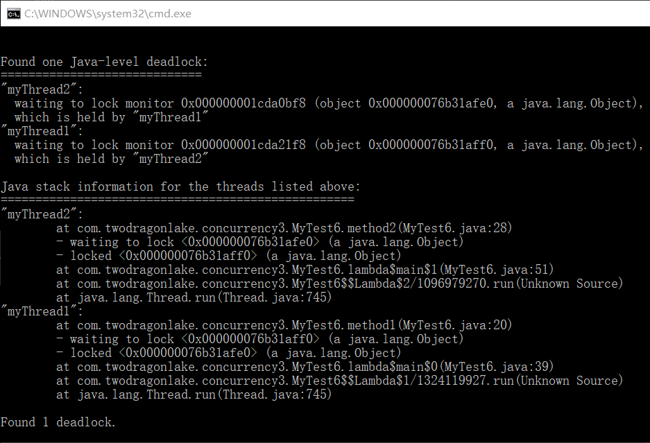

死锁 线程1等待线程2互斥持有的资源，而线程2也在等待线程1互斥持有的资源，两个线程都无法继续执行。
活锁 线程持续重试一个总是失败的操作，导致无法继续执行。
饿死 线程一直被调度延迟访问其赖以执行的资源，也许是调度器先于低优先级的线程而执行高优先级的线程，同时总是会有一个高优先级的线程可以执行，饿死也叫作无限延迟。
死锁实例 1 2 3 4 5 6 7 8 9 10 11 12 13 14 15 16 17 18 19 20 21 22 23 24 25 26 27 28 29 30 31 32 33 34 35 36 37 38 39 40 41 42 43 44 45 46 47 48 49 50 51 52 53 public class MyTest6 { private Object lock1 = new Object(); private Object lock2 = new Object(); public void method1(){ synchronized (lock1){ synchronized (lock2){ System.out.println("method1 invoked"); } } } public void method2(){ synchronized (lock2){ synchronized (lock1){ System.out.println("method2 invoked"); } } } public static void main(String[] args) { MyTest6 myTest6 = new MyTest6(); Runnable runnable1 = () ->{ while(true){ myTest6.method1(); try{ Thread.sleep(100); }catch (Exception e){ } } }; Thread t1 = new Thread(runnable1,"myThread1"); Runnable runnable2 = () ->{ while(true){ myTest6.method2(); try{ Thread.sleep(100); }catch (Exception e){ } } }; Thread t2 = new Thread(runnable2,"myThread2"); t1.start(); t2.start(); } }
输出：
死锁检测 jvisualvm 这个时候我们使用jvisualvm查看死锁，在cmd里边敲入jvisualvm
下边也有死锁的信息打印：
1 2 3 4 5 6 7 8 Found one Java-level deadlock: ============================= "myThread2": waiting to lock monitor 0x000000001ce80d18 (object 0x000000076f1a82f0, a java.lang.Object), which is held by "myThread1" "myThread1": waiting to lock monitor 0x000000001ce80c68 (object 0x000000076f1a8300, a java.lang.Object), which is held by "myThread2"
jstack命令 首先使用jstack查看当前的java进程：
1 2 3 4 5 C:\Users\Administrator>jps 20340 20664 Launcher 21352 MyTest6 19660 Jps
我们死锁程序是MyTest6，接下来使用jstack查看：
